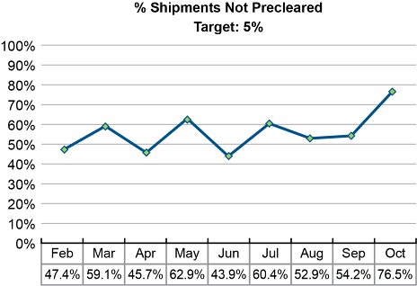
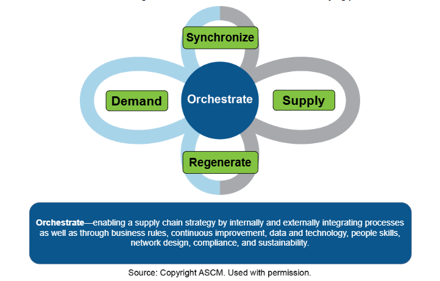
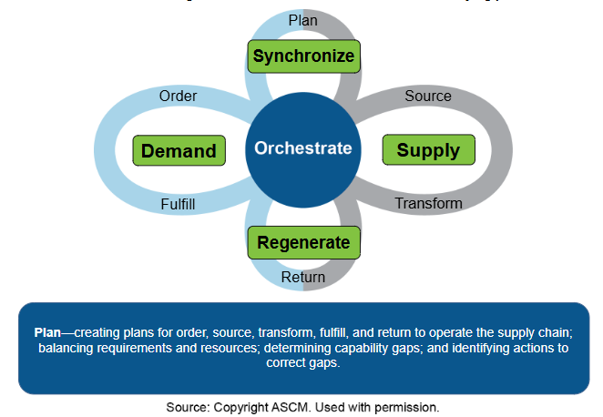

Sourcing involves strategic processes such as deciding whether to make or buy goods or services and setting category strategies to allow the vital few procured items to receive more attention than the trivial many. In addition, the procurement process involves selecting and working with suppliers.
After providing this overview of sourcing, here we delve into a strategic-level sourcing decision tool, a make-versus-buy analysis, and we also address contracting, including outsourcing and offshoring. Some organizations distinguish between make-versus-buy and outsourcing decisions to show that the process has evolved to become more strategic. This text treats the make-versus-buy analysis as a strategic decision that includes contracting for any activity, including products, subassemblies, business processes, or services. Offshoring is outsourcing to a different country.
The advent of things like supplier relationship management (SRM) and strategic sourcing has had a strong effect on how organizations assess their sourcing alternatives, choose supply partners, and interact with their suppliers. Interactions are more collaborative, involving two-way discussions with suppliers on product design, material choices, and supply chain options and timing rather than just handing down specifications and deadlines. Technology has enabled this shift by streamlining many of the repetitive or time-consuming portions of sourcing processes.
The overall sourcing process is discussed next, followed by a discussion of the procurement process, which has strategic elements but is primarily tactical and operational. After that, there is a discussion of how to develop sourcing competency.
Exhibit 3-1 shows common steps in the sourcing process. Some of these steps might be taken in a different order, and some sourcing processes may have different steps.

The first step, develop and/or validate the supply plan, is a major strategic process in itself. Since most organizations already have supply plans, usually this is a process of revisiting the plans to address new product introductions, product retirements, new lines of business, and continuous improvement feedback. To stay focused, this step is often run using project management. A project team is determined, and a project charter is used to limit the scope of work to the organization's priorities in this area. Tools used can include make-versus-buy analysis, contracting or offshoring strategies, and consideration of existing systems (e.g., regional supply and manufacturing facilities, customer locations). Supply plans are iteratively developed, so the results of some of the later steps in the sourcing process are used to refine the plans to be more specific.
The second step, research the supply market, can include determining sourcing requirements and timing, performing total cost of ownership analyses, and performing supply market research.
The third step, create/refine categories and category strategy, involves classifying the organization's purchasing spend in relevant ways and developing an overall strategy for effectively managing purchasing categories. The fourth step, do spend and portfolio analyses, builds off of these organization-specific categories. A spend analysis can use tools such as a Pareto analysis to identify which categories have the most procurement spend and which suppliers get relatively more spend. This is useful for rationalizing or right-sizing the supply base. A portfolio analysis is an assessment of how much you need the suppliers in a given category. It places categories into groups related to their strategic importance versus supply chain difficulty (bottleneck, core competency, leverage, and commodity). The fifth step, segment suppliers, also complements the category strategy by determining the proper level of relationship for specific suppliers, and this is based on the portfolio analysis and on how much the supplier needs the organization.
The sixth step, conduct procurement processes, is addressed more next. The seventh step, continuously improve, is a feedback step that involves determining how to improve the supply planning process or specifying areas of the supply plan or categories that need to be prioritized in the next version of the supply plan.
Exhibit 3-2 shows various purchasing functions. Often a senior, experienced individual is responsible for the strategic tasks, and others will oversee the tactical tasks. As purchasing has become more strategic and global, purchasing roles have been stratified according to strategic and tactical expertise.

The individual with the strategic role may be charged with tasks such as
For buy decisions, determining whether to outsource or offshore and what types of contracts to use
Adding value to products by managing supplier and strategic sourcing relationships
Serving on cross-functional teams to integrate workflows and share data
Enforcing compliance with sourcing contracts and related supplier policies
Analyzing purchasing data to report impact on corporate goals and to identify areas for improvement.
The more tactical tasks, managed by one or more persons, may include
Managing supply (planning and procuring supplies based on the master production schedule, auditing present needs on the manufacturing floor, releasing work orders, creating purchasing planning schedules)
Monitoring the performance of suppliers and issuing reports on timeliness, completion, policy compliance, and quality of work.
Various sourcing technologies or services put in-depth information about the supply channel in the hands of purchasing managers, planners, and purchasing agents/buyers in real time. The requirements for purchasing jobs have changed accordingly. A survey of job postings shows that managers must have a greater understanding of the corporation's business goals (rather than merely the departmental goals) and how purchasing can affect the achievement of those goals. They must have substantial analytical abilities and people skills, including awareness of cultures with which they may come into contact. Global expertise (market research, knowledge of taxes and local laws) is necessary. And purchasers must be customer-centric.
Planners, purchasing agents, and buyers must be familiar with a host of sourcing and supplier relationship management technologies, but they must also be creative in translating corporate purchasing strategies into specific tactics and in finding opportunities to improve tactical processes. They must be detail-oriented and able to track global logistics and contract performance.
Organizations need skilled operations management and supply chain management professionals to keep their business favorably positioned throughout their markets.
As the world's economy becomes increasingly integrated, it is imperative for purchasing management to master the best practices for operating successfully in a global market. Organizations need skilled operations management and supply chain management professionals to keep their business favorably positioned throughout their markets. The ideal manager for international suppliers will need a special set of soft skills. The individual should be someone who can moderate a discussion of expectations and who is sensitive to the values and needs of the other party's culture.
📖 ASCM Definition — make-or-buy cost analysis:
An associated definition from the ASCM Supply Chain Dictionary is for make-or-buy decision:
Make-versus-buy is strategic, because global sourcing of processes or products is a complex and challenging decision that impacts organizational profits and reputation. Make-versus-buy is also tactical; when procuring and delivering goods and services, individual decisions can be made on an ongoing basis to address current prices, current capacity, and so on.
Before selecting a partner to provide materials or services, a supply chain company needs to ask and answer a set of questions about the possible consequences of giving the activity in question to another company, including
Is the activity a core competency?
What are the consequences of losing related skills or knowledge?
What is the landed cost (or total cost of ownership)?
When considering contracting out components of a product or service, the core competency question revolves around whether the component is integral to the device or if it is modular. An integral component is typically unique to a product, and if it fails the whole product fails. A modular component is interchangeable with other variants on the market, such as a computer component. Integral components are much more risky to outsource.
A process for considering core competencies in the make-or-buy decision is described in Customer-Centered Supply Chain Management (Kuglin, 1998). Kuglin uses the process as part of a complete transformation to a customer-centered supply chain leader. In that effort, the enterprise develops a complete list of all core and non-core competencies as part of a decision of what activities to contract out and which to keep or develop as core competencies. Kuglin's process can be applied to an example. Assume that an enterprise is considering contracting with a supply chain partner, yet to be identified, to provide its customers with overnight order-to-delivery service.
Step 1: Determine whether the enterprise already has overnight order-to-delivery as a core competency. It is possible that the enterprise believes overnight delivery is a core competency while clients say otherwise.
Step 2: Determine whether there is a need in the marketplace for overnight order-to-delivery service. Interviewers question respondents about the need for the capability in the marketplace.
Step 3: Determine the relationship between the enterprise's capability to deliver the service and the need for the service in the marketplace. The preceding steps can produce several outcomes:
Contract out the activity. Having decided to outsource overnight order-to-delivery service, the enterprise makes a short list of available third-party logistics providers and selects one to develop into a supply chain partner. The selection process may be accomplished by soliciting proposals. Develop a business problem and ask potential providers to work with the enterprise to find a solution. This method tests the unique abilities of each company.
What Are the Consequences of Lost Skills or Knowledge?
When an enterprise contracts out functions to another company, domestic or foreign, it may be divesting itself of valuable expertise. When all the components of a complex electronic system are made offshore, for example, the enterprise no longer maintains the knowledge of those systems in-house. The skill, knowledge, and perhaps the creativity of its former workers in that area are gone and cannot be easily recovered. The costs of those losses may be difficult to measure and balance against the gains, but they are real.
The result of a nuanced analysis may be that an activity is only partially outsourced. For example, Toyota
Allows the electronic systems in its vehicles to be both designed and produced by external suppliers
Retains the design portion of its vehicle transmissions but outsources much of transmission production
Both designs and manufactures all of its engines because this is a core competency.
What Is the Landed Cost (or Total Cost of Ownership)?
Once an enterprise has decided to contract out a particular component or service, attention turns to comparisons of quality, cost, and availability. The traditional cost measurement in this case is landed cost, which is the cost of the item including all costs to deliver it to the organization (transportation, tariffs, etc.). If the goods from domestic and foreign sources are of equal quality and cost becomes a main consideration, landed cost provides a better basis for a meaningful comparison than just price. In other cases, such as when quality differences require broader analysis, total cost of ownership may be used to compare costs in a make-or-buy decision. Total cost of ownership starts with landed cost but considers many more factors, such as quality costs and life cycle costs.
Components or services delivered by a foreign supplier are often priced far lower than those produced domestically. Even assuming that the components or services are of the same quality, however, there are other considerations. Will foreign suppliers be able to provide the components in sufficient quantities to meet production needs? Will the (likely) longer lead times and larger delivery sizes (higher average inventory) be acceptable? Are there infrastructure constraints that may stall shipments unexpectedly? Will labor, economic, or political problems suddenly cut off supplies? Will shipments be secure against pilferage, damage in transit or handling, tampering, and terrorism? Finally, what other costs are incurred by bringing the components to the manufacturing site from a foreign rather than domestic producer, such as higher monitoring and control costs?
Organizations justify their make-or-buy decision by comparing the advantages to the risks and costs of each alternative. As was implied in the previous discussion of Kuglin's step-by-step process, a primary aspect of this decision is whether an outsourcing partner can provide the organization with new capabilities because they have complementary core competencies. The organization weighs these potential advantages against the drawbacks of contracting such as potential loss of skills and knowledge and higher-than-expected landed costs. Sometimes the result is that the organization settles on a hybrid approach, retaining some processes and outsourcing others.
Contracting out activities to third parties can take many forms, including outsourcing and offshoring or the use of service providers such as third- and fourth-party logistics providers.
📖 ASCM Definition — outsourcing:
Outsourcing can be contrasted with insourcing, which the ASCM Supply Chain Dictionary defines as "using the firm's internal resources to provide goods and services." A synonym for outsourcing is subcontracting, which involves "sending production work outside to another manufacturer."
Anything that can be digitized can be contracted out globally. As a consequence, many corporations have sought out the cheapest labor sources in a wide variety of occupations. This outsourcing takes place in many directions—not only from developed countries to emerging economies. Developed countries now outsource to one another. Japanese car companies once made inroads into U.S. and European markets with low-priced automobiles. When the competition responded and transportation costs increased, the Japanese car companies began moving production closer to customers in countries such as the U.S. and Canada. Similarly, American car companies are now successfully manufacturing American cars in China for sale to Chinese consumers.
Another trend in contracting is the use of smart contracts. Smart contracts use blockchain technology (a distributed ledger that forms a chain of permanent records one secure "chain link" at a time) to make contracts more legally defensible because the record, once agreed to by all parties, is almost impossible to surreptitiously alter. The contracting process can also be conducted remotely and quickly. However, a smart contract can be amended fairly easily by adding another link in the chain to the blockchain ledger, following agreement by all parties.
Many of the Fortune 1000 companies contract out multiple business processes, from payroll to manufacturing. The following are some outsourcing examples related to supply chain management.
Supplier relationship management (SRM). SRM organizations with experience in a particular region could assume responsibility for transactional purchasing or supplier sourcing, contract negotiation, two-way communications of expectations, and compliance management. Outsourced SRM can also provide strategic support for alliances such as spend analysis or facilitating design collaboration.
Manufacturing. Manufacturing can be contracted out to organizations that have advantages in labor costs, are located closer to raw materials, or have special expertise in producing products or subassemblies efficiently at expected quality levels.
Logistics and logistics management. Third- and fourth-party logistics providers are ways of contracting out logistics operations or its management.
Customer relationship management (CRM). CRM suppliers may provide call centers or advanced telephony services (like universal queue or voice recognition), database collection and management, and online service agents. The best CRM suppliers train their service representatives in their clients' products and processes to make performance seamless.
Information systems. Offshore development of custom technology applications can reduce labor costs significantly. Software as a service (SaaS) can be seen as a way to limit investment in software, hardware, and support staff for systems that otherwise become obsolete quickly.
Potential benefits of contracting out activities include the following:
Economies of scale. A third-party provider with a core competency in the activity may have numerous customers for the given activity and therefore can spread its fixed costs over more units of the good or service.
Risk reduction. Contracting transfers risks, such as demand uncertainty, to the third-party provider. The provider may be better equipped to manage demand uncertainty by spreading forecasts over a larger number of customers. (It may handle many more orders than those brought in by any one of its clients, which reduces risks through risk pooling.) The outsourcing provider may also be able to react more rapidly to changes in customer demand.
Increased capital available for investment. Since some of the capital required to engage in the outsourced activity is supplied by the third-party provider, the enterprise has more capital available for research, payment of dividends, debt reduction, etc.
Clearer focus. An organization contracts out an activity only if it is not a core competency (in most cases). This increases the organization's ability to focus on core competencies.
Access to new technologies. The third-party provider, because it focuses on the outsourced activity as a core competency, is more likely to have the latest and most effective resources for carrying out that activity. Indeed, if it is to maintain its market share, it must keep up with advances in strategy and technology.
Access to regional benefits or avoidance of regional issues. A third party may operate in a market that is currently underserved and so can provide better market access. The third party also may be able to help the organization avoid certain regional issues, such as requirements for majority local ownership.
Faster development cycle times. The third-party supplier's technical expertise may enable the enterprise to accelerate development time for new products or services.
Contracting reduces some complexities, since the organization will no longer need to perform or directly administer certain tasks. At the same time, it increases the complexity of other forms of business administration, especially for monitoring and controlling and risk management. Risks include poor quality, intellectual property theft, supplier corruption/fraud, or failure to maintain organizational policy such as for worker protection or environmental sustainability. These all relate to a higher risk of reputation damage, so organizations need well-developed contract clauses, legal review, audit functions to verify compliance, and enforcement mechanisms.
Outsourcing partners may be located near at hand or offshore. Offshore is defined as "outsourcing a business function to another company in a different country than the original company's country" (ASCM Supply Chain Dictionary). An organization could also offshore without outsourcing by opening a branch in a different country and hiring employees there to staff a business function. Thus, offshoring usually implies locating a business unit or facility in a different country, which could be directly owned or owned by a supply chain partner. Note that in many smaller countries that have numerous neighbors, offshoring could still involve relatively short distances. A related term, nearshoring, refers to this type of offshoring to a nearby country, often as a shift of business away from a more distant country.
With offshoring, the first consideration should be organizational needs, not a search for "today's global sourcing hot spots." Only when an organization has thoroughly assessed its needs for offshoring is there a sound basis for evaluating and selecting specific countries and suppliers. An organization is then ready to consider how potential global suppliers can support the organizational value proposition.
Although cost cutting may be the primary driver for offshoring, it should not be the sole criterion. Another reason for global sourcing is market growth. Sourcing from a particular country may open up new market possibilities. Sourcing relationships allow an organization to learn about conducting business in a potential market. Offshoring may also provide additional sourcing options. Sourcing or procuring products or services from more than one country develops alternate sources and can provide backup for emergencies or other supply chain disruptions.
Offshoring increases the complexity of assessing potential suppliers. Once a supplier is selected, offshoring increases the complexity of developing suppliers to continually improve products and processes. Dealing with foreign-based organizations requires understanding and overcoming complexities such as language differences, culture differences, country-specific processes, and legal, tax, and regulatory differences.
Many suppliers located in countries with lower labor costs also have less mature organizational levels, less emphasis on total quality initiatives, or less developed information visibility and technology. Investing in improving these factors adds to the total cost of ownership and may not provide a payback if the relationship must be terminated prematurely.
In addition, some countries with lower labor costs have onerous government regulations and bureaucracy that slow cycle times or permitting unless local expertise in navigating these impediments is obtained. Even with local expertise, organizations could be prohibited by their home country and/or organizational governance policy from engaging in certain locally expected activities (e.g., bribery).
Although many benefits may be achieved by offshoring, organizations must be careful about the risks they assume. Risks include failure to perform or deliver on time, failure of technology systems or electrical grids for unacceptable periods, or theft of intellectual property. Either the supplier or any transportation intermediary could be at fault, or the cause could be from "force majeure," such as a natural disaster. Organizations need to exercise great caution in whom they work with and how much to trust these organizations, and they may need contingency plans such as backup suppliers to enable supply chain resilience.
One method of mitigating risks when embarking on offshoring is to build sufficient inventory prior to a move to prevent supply interruptions. For example, in the medical device industry, when a product line is offshored, it is not unusual for the organization to build one year of stock to mitigate the risks in the offshore transfer of the production line as well as regulatory risks. However, this is not an option if inventory faces fast obsolescence/perishability. Note also that there is a cost associated with such a build-up and this cost would need to be factored into the original analysis.
Compliance and control costs can increase significantly when using outsourcing or offshoring.
Another issue is how the organization will enforce compliance with its business goals and values. For example, many countries have relatively few government regulations related to environmental protection or sustainability. While avoiding onerous regulations could be among the reasons to choose an offshore site, global organizations risk damage to their reputations if problems occur. Take, for example, the lead found in many children's toys and the contaminated foods that have harmed some organizations' reputations and bottom line. Compliance and control costs can increase significantly when using outsourcing or offshoring.
The key point related to risk in any outsourcing arrangement is that the organization remains the responsible party in the eyes of the customer, so it must seek ways to manage its exposure—perhaps through pilot programs, close monitoring for compliance, maintaining backup suppliers, or redundant capacity.
Sometimes organizations contract out manufacturing but continue to perform assembly of the final components, while other organizations choose to outsource both of these activities. Final assembly in the country of sale may lessen tariffs, reduce transport costs for bulky items, and enhance the organization's reputation by providing local jobs. Determining the relative costs of manufacturing and/or assembly in different markets is as complex as comparing landed costs for goods.
Exhibit 3-3 summarizes some of the advantages and risks of product manufacturing and/or assembly in another country.
